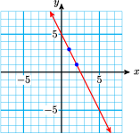
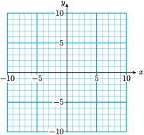
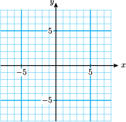

Section 4.5 Point-Slope Formula
Subsection Finding an Equation for a Line
The slope of a line is the same, no matter which points we use to compute it. Therefore, if we know the slope of a line and any one point on the line, then all other points on the line must satisfy the slope formula:
This is, in fact, an equation for the line.
Example 4.56.
- Graph the line that passes through the point \((1,3)\) and has slope \(-2\text{.}\)
- Find an equation for the line that passes through the point \((1,3)\) and has slope \(-2\text{.}\)
-
We plot the point \((1,3)\text{,}\) then use the slope, \(-2\text{,}\) to find another point on the line. From the point \((1,3)\text{,}\) we move 2 units down and 1 unit to the right, arriving at \((2,1)\text{.}\) We draw the line through these two points. The graph is shown below.
 -
We use the formula
\begin{equation*} \dfrac{y-y_1}{x-x_1} = m \end{equation*}with \(\dfrac{\Delta y}{\Delta x}=\dfrac{-2}{1}\) and \((x_1,y_1)=(\alert{1},\alert{3})\) to get
\begin{equation*} \dfrac{-2}{1}=\dfrac{y-\alert{3}}{x-\alert{1}} \end{equation*}To simplify the equation, we cross-multiply.
\begin{align*} 1(y-3) \amp = -2(x-1) \amp\amp \blert{\text{Apply the distributive law.}}\\ y-3\amp = -2x+2 \amp\amp \blert{\text{Add 3 to both sides.}}\\ y \amp = -2x+5 \end{align*}You can verify on the graph that \(y=-2x+5\) is an equation for the line.
In Example 4.56 we used the slope formula in a new way: to find the equation of a line. We can simplify the formula by clearing the denominator.
to get
We call this the point-slope formula for linear equations.
Point-Slope Formula.
To find an equation for the line of slope \(m\) passing through the point \((x_1,y_1)\text{,}\) we use the point-slope formula
or
Look Closer.
What is the difference between the slope formula and the point-slope formula?
They are really the same formula, but they are used for different purposes:
- We use the slope formula to calculate the slope of a line when we know two points on the line. That is, we know \((x_1,y_1)\) and \((x_2,y_2)\text{,}\) and we are looking for \(m\text{.}\)
- We use the point-slope formula to find the equation of a line. That is, we know \((x_1,y_1)\) and \(m\text{,}\) and we are looking for \(y=mx+b\text{.}\)
Subsubsection Reading Questions
RQ 4.57.
Give two versions of the point-slope formula
\(\dfrac{y-y_1}{x-x_1} = m~~\) and \(~~y-y_1 = m(x-x_1)\)
RQ 4.58.
What is the point-slope formula used for?
To find the equation of a line
Example 4.59.
Find an equation for the line that passes through the point \((1,4)\) and is perpendicular to the line \(4x-2y=6\text{.}\)
We know one point on the required line, but we also need to know its slope. Now, our line is perpendicular to the given line, and the slope of the given line is \(~m_1=2~\) (as you can check by putting its equation into slope-intercept form). So the slope of our line is
Now we can use the point-slope formula with \(~m_1=\dfrac{-1}{2}\) and \((x_1,y_1) = (1,4)\text{.}\)
The given line and the perpendicular line are shown in the figure.
Caution 4.60.
If we happen to know the \(y\)-intercept of a line, we can write its equation using the slope-intercept formula, \(y=mx+b\text{.}\) But if we don't know the \(y\)-intercept and instead know a different point, it is easier to use the point-slope formula.
Subsection The Line Through Two Points
How many lines pass through two given points? There is only one. We can use the point-slope formula to can find its equation.
Example 4.61.
Find an equation for the line that passes through \((2,-1)\) and \((-1,3)\text{.}\)
We solve this problem in two steps: First, we find the slope of the line, and then we use the point-slope formula.
Step 1 Let \((x_1,y_1) = (2,-1)\) and \((x_2,y_2) = (-1,3)\text{.}\) Using the slope formula, we find
Step 2 We apply the point-slope formula with \(m=\dfrac{-4}{3}\) and \((x_1,y_1) = (2,-1)\text{.}\) (We can use either point to find the equation of the line.) Then
We cross-multiply to find
The graph of the line is shown in the figure.
Subsubsection Reading Questions
RQ 4.62.
How many different lines pass through two given points?
One
RQ 4.63.
What formula do we use to find the equation of a line through two points?
Point-slope formula
To Fit a Line through Two Points.
- Compute the slope between the two points.
- Substitute the slope and either point into the point-slope formula.
Subsection Applications
Variables that increase or decrease at a constant rate can be described by linear equations.
Example 4.64.
In 1993, Americans drank 188.6 million cases of wine. Wine consumption increased at a constant rate over the next decade, and in 2003 we drank 258.3 million cases of wine. (Source: LA Times, Adams Beverage Group)
- Find a formula for wine consumption, \(W\text{,}\) in millions of cases, \(t\) years after 1990.
- State the slope as a rate of change. What does the slope tell us about this problem?
-
We have two data points of the form \((t,W)\text{,}\) namely \((t_1,W_1)=(3,188.6)\) and \((t_2,W_2)=(13,258.3)\text{.}\) We use the point slope formula to fit a line through these two points. First we compute the slope.
\begin{equation*} \dfrac{\Delta W}{\Delta t}=\dfrac{W_2-W_2}{t+2-t_1}=\dfrac{258.3-188.6}{13-3}=6.97 \end{equation*}Next, we substitute the slope \(m=6.97\) and either of the two data points into the point-slope formula.
\begin{align*} W \amp = W_1+m(t-t_1)\\ W \amp = 188.6+6.97(t-3)\\ W \amp = 167.69+6.97t \end{align*}Thus, \(W = 167.69+6.97t\text{.}\)
-
The slope gives us the rate of change of \(W\) with respect to \(t\text{.}\) The units of the variables can help us interpret the slope in context.
\begin{equation*} \dfrac{\Delta W}{\Delta t}=\dfrac{258.3-188.6~\text{millions of cases}}{13-3~\text{years}} = 6.97~ \text{millions of cases/years} \end{equation*}Over the ten years between 1993 and 2003, wine consumption in the US increased at a rate of 6.97 million cases per year.
Subsubsection Reading Questions
RQ 4.65.
What are the two steps to fit a line through two points?
Find the slope, then use the point-slope formula
Subsection Skills Warm-Up
Good work!
You've finished the Reading assignment for Section 4.5. Now try the Skills Warm-Up Exercises before the next class meeting.
Exercises Exercises
Use cross-multiplying to solve the proportion for \(y\) in terms of \(x\text{.}\)
1.
\(\dfrac{y}{x} = \dfrac{-5}{2}\)
2.
\(\dfrac{y-3}{4} = \dfrac{x}{2}\)
3.
\(\dfrac{x+1}{5} = \dfrac{y-1}{3}\)
4.
\(-2 = \dfrac{y+6}{x}\)
5.
\(\dfrac{y+2}{x-5} = \dfrac{3}{4}\)
6.
\(\dfrac{-1}{3} = \dfrac{4-y}{1-x}\)
Solutions Answers to Skills Warm-Up
- \(\displaystyle y=\dfrac{-5}{2}x\)
- \(\displaystyle y=2x+3\)
- \(\displaystyle y=\dfrac{3}{5}x+\dfrac{8}{5}\)
- \(\displaystyle y=-2x-6\)
- \(\displaystyle y=\dfrac{3}{4}x-\dfrac{23}{4}\)
- \(\displaystyle y=\dfrac{-1}{3}x+\dfrac{13}{3}\)
Subsection Lesson
Activity 4.17. Point-Slope Formula.
-
Graph the line of slope \(\dfrac{-1}{2}\) that passes through the point \((-3,2)\text{.}\)
- \(\displaystyle \blert{\text{Plot the point}~~(-3,2).}\)
- \(\displaystyle \blert{\text{Use the slope to find a second point:} ~~~m =\dfrac{\Delta y}{\Delta x} = \dfrac{-1}{2}}\)
-
\(\displaystyle \blert{\text{Use the slope to find a third point:} ~~~m =\dfrac{\Delta y}{\Delta x} = \dfrac{1}{-2}}\)

-
Find an equation for the line.
- \(\displaystyle \blert{\text{Use the point-slope formula}~\dfrac{y-y_1}{x-x_1} = m.}\)
- \(\displaystyle \blert{\text{Cross-multiply to simplify the equation.}}\)
- \(\displaystyle \blert{\text{Solve for} ~y.} \)
-
-
Graph the line of slope 3 that passes through the point \((-4,-6)\text{.}\)
- \(\displaystyle \blert{\text{Plot the point}~~(-4,-6).}\)
- \(\displaystyle \blert{\text{Use the slope to find a second point:} ~~~m =\dfrac{\Delta y}{\Delta x} = \dfrac{3}{1}}\)
-
\(\displaystyle \blert{\text{Use the slope to find a third point:} ~~~m =\dfrac{\Delta y}{\Delta x} = \dfrac{-3}{-1}}\)
-
Find an equation for the line.
- \(\displaystyle \blert{\text{Use the point-slope formula}~\dfrac{y-y_1}{x-x_1} = m.}\)
- \(\displaystyle \blert{\text{Cross-multiply to simplify the equation.}}\)
- \(\displaystyle \blert{\text{Solve for} ~y.} \)
-
Activity 4.18. Using the Point-Slope Formula.
-
Find an equation for the line that passes through \(-1,4)\) and \((3,-2)\text{.}\)
- \(\displaystyle \blert{\text{Compute the slope of the line.}}\)
- \(\displaystyle \blert{\text{Apply the point-slope formula.}}\)
-
Around 1950, people began cutting down the world's rain forests to clear land for agriculture. In 1970 there were about 9.8 million square kilometers of rain forest left, and in 1990 there were about 8.2 million square kilometers.
-
Use these data points to find a linear equation for the number of million square kilometers, \(y\text{,}\) of rain forest left \(x\) years after 1950.
- \(\displaystyle \blert{\text{Data points:}}\)
- \(\displaystyle \blert{\text{Compute the slope:}}\)
- \(\displaystyle \blert{\text{Apply the point-slope formula.}} \)
- If we continue to clear the rain forest at the same rate, when will it be completely destroyed?
-
- What is the slope of a line that is parallel to \(~x+4y=2\text{?}\)
- Find an equation for the line that is parallel to \(~x+4y=2~\) and passes through \((2,3)\text{.}\)
- What is the slope of a line that is perpendicular to \(~x+4y=2\text{?}\)
- Find an equation for the line that is perpendicular to \(~x+4y=2~\) and passes through \((2,3)\text{.}\)
Subsubsection Wrap-Up
Objectives
In this Lesson we practiced the following skills:
- Using the point-slope formula to find the equation of a line
- Using the point-slope formula to graph a line
- Using the point-slope formula in applications
Questions to answer before the Homework Preview.
Questions
- In graphing the line in Activity 1, explain how the 2 in the point \(-3,2)\) and the 2 in the slope \(\dfrac{-1}{2}\) are used differently.
- In Problem 2 of Activity 2, what were the two data points?
- What was different in the solutions of Problems 2 and 3 of Activity 2?
Subsection Homework Preview
Here are exercises to try before the end of the class meeting.
Exercises Exercises
- Graph the line.
- Find the equation of the line.
1.
\(m=-3;~~~(-6,8)\)
2.
\(m=\dfrac{2}{5};~~~(7,4)\)
3.
Find an equation of the line that goes through \((-6,-4)\) and \((2,8)\text{.}\)
4.
Find an equation of the line that is perpendicular to \(~3x-5y=1~\) and passes through \((0,4)\text{.}\)
Solutions Answers to Homework Preview
- \(\displaystyle y=-3x-10\)
- \(\displaystyle y=\dfrac{2}{5}x + \dfrac{6}{5}\)
- \(\displaystyle y=\dfrac{3}{2}x+5\)
- \(\displaystyle y=\dfrac{-5}{3}x+4\)
Exercises Homework 4.5
For Problems 1–6,
- Use the point-slope method to graph the line with the given slope and passing through the given point.
- Find an equation for the line. Write your equation in slope-intercept form.
- Find the \(x\)-intercept of the line.
1.
\(m=-2,~~(-3,4)\)

2.
\(m=\dfrac{1}{2},~~(4,-3)\)
3.
\(m=\dfrac{-2}{3},~~(-6,2)\)
4.
\(m=0,~~(-3,5)\)
5.
\(m=\dfrac{-5}{2},~~(6,-10)\)
6.
\(m=3,~~(1,-1)\)
For Problems 7–9, without doing any calculations, give the slope of each line and the coordinates of one point on the line.
7.
\(y=\dfrac{3}{5}-7\)
8.
\(y-2=3(x+5)\)
9.
\(y=\dfrac{4}{5}x)\)
For Problems 10–12, find an equation for the line passing through the given points. Write your answer in slope-intercept form.
10.
\((-2,4),~(1,7)\)
11.
\((3,5),~(-3,-5)\)
12.
\((6,4),~(-2,5)\)
For Problems 13–16, find the equation of the line shown in the graph.
13.
14.
15.
16.

17.
-
Put the equation \(2y-3x=5\) into slope-intercept form, and graph the equation.
 - What is the slope of any line that is parallel to \(2y-3x=5\text{?}\)
On your graph for part (a), sketch by hand a line that is parallel to \(2y-3x=5\) and passes through the point \((4,2)\text{.}\)
- Use the point-slope formula to write an equation for the line that is parallel to the graph of \(2y-3x=5\) and passes through the point \((4,2)\text{.}\)
18.
-
Put the equation \(x-2y=5\) into slope-intercept form, and graph the equation.
- What is the slope of any line that is perpendicular to \(x-2y=5\text{?}\)
- On your graph for part (a), sketch by hand a line that is perpendicular to \(x-2y=5\) and passes through the point \((4,-3)\text{.}\)
- Use the point-slope formula to write an equation for the line that is perpendicular to the graph of \(x-2y=5\) and passes through the point \((4,-3)\text{.}\)
19.
- What is the slope of the line \(y=2x+1\text{?}\)
- What is the slope of a line parallel to \(y=2x+1\text{?}\)
- A line is parallel to \(y=2x+1\) and passes through \((-2,1)\text{.}\) What is its equation?
20.
- What is the slope of the line \(y=-3x-2\text{?}\)
- What is the slope of a line parallel to \(y=-3x-2\text{?}\)
- A line is parallel to \(y=-3x-2\) and passes through \((1,3)\text{.}\) What is its equation?
For Problems 21–24, we'll find a linear model from two data points.
- Make a table showing the coordinates of two data points for the model.
- Find a linear equation in slope-intercept form relating the variables.
- Use your equation to answer the questions.
21.
Francine is driving into the mountains and stopping periodically to record the temperature, \(T\text{,}\) at various altitudes, \(h\text{.}\) The temperature at an altitude of 3200 feet is \(77 \degree\text{,}\) and the temperature at 8000 feet is \(65 \degree\text{.}\)
- What is the slope, including units? What does it tell you about the problem?
- What will the temperature be at 10,000 feet?
- What was the temperature at sea level?
22.
Envirotech is marketing a new line of microwave clothes dryers. It cost them $45,000 to produce the first 100 dryers. When they had produced 180 dryers, their total cost was up to $61,000. They would like to know the total cost, \(C\text{,}\) of producing \(x\) dryers.
- What is the slope, including units? What does it tell you about the problem?
- Envirotech has budgeted $100,000 for microwave clothes dryers this year. How many can they produce?
- How much did Envirotech invest in development before they made the first dryer?
23.
Flying lessons cost $645 for an 8-hour course and $1425 for a 20-hour course. Both prices include a fixed insurance fee. Express the cost, \(C\text{,}\) of flying lessons in terms of the length, \(h\text{,}\) of the course in hours.
- What is the slope, including units? What does it tell you about the problem?
- How much does a 10-hour course cost?
- How much is the fixed insurance fee?
24.
On an international flight a passenger may check two bags each weighing 70 kilograms, or 154 pounds, and one carryon bag weighing 50 kilograms, or 110 pounds. Express the weight, \(p\text{,}\) of a bag in pounds in terms of its weight, \(k\text{,}\) in kilograms.
- What is the slope, including units? What does it tell you about the problem?
- What does a 50-pound bag weigh in kilograms?
- Why is the constant term in your equation equal to zero?